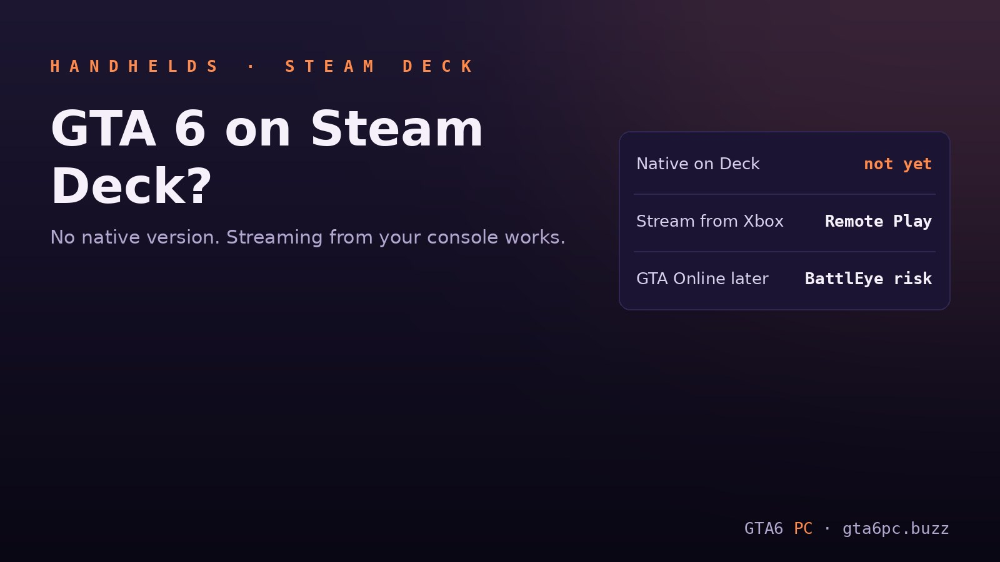

Can you play GTA 6 on Steam Deck?
The Steam Deck is the most popular way to play PC games away from a desk, so Deck owners keep asking the same question: can it run GTA 6? Right now the answer is no, not natively, because there is no PC version to install. There is a streaming workaround, and GTA 5's history on the Deck shows exactly what to expect when a PC version finally arrives.

The short answer
No, not natively. The Steam Deck is a PC handheld, and it can only run games that exist for PC. GTA 6 launched on November 19, 2026 for PS5 and Xbox Series X|S only, and Rockstar has announced no PC version, no PC release date and no PC store page. There is nothing to install on a Deck, a ROG Xbox Ally, a Legion Go or any other handheld. A GamesBeat report from October 13, 2026 says Rockstar is targeting the first quarter of 2027 for PC, but Rockstar has not confirmed it, so treat it as a report, not a date. Our GTA 6 PC release date page tracks that story.
There is one way to play today, and it does not involve installing anything. You can stream GTA 6 from a console you already own to your Steam Deck over your home network. The game runs on the console, and the Deck is only a screen and a controller. It works, but it is streaming, not portable play, and it is only an option if you already own the console and the game.
The streaming route that works today
Rockstar says GTA 6 fully supports Remote Play on PlayStation and Xbox, and that support is the key to playing on a Deck today. The setup differs by console, and both routes need a steady home network, because the Deck is only displaying a video stream.
From an Xbox Series X or Series S, you use Xbox Remote Play. On the Deck, switch to Desktop Mode and install either the Greenlight app or Google Chrome, then connect to your Xbox with your Microsoft account. Add the app as a non-Steam game so it is reachable from the Deck's gaming mode. The game runs on the Xbox, the Deck shows the stream and handles your controls, and streaming adds some input latency. The same setup works with an Xbox Series S as the source console, and with the Steam Machine as the display.
From a PS5, you use PS Remote Play, which streams from your own console to the official Remote Play apps. The PlayStation Portal is Sony's own device for this, but the same stream can reach a Deck through the available Remote Play clients. Neither Sony's nor Microsoft's Remote Play pages list SteamOS as a supported platform, so this is a community workaround rather than an officially supported setup, and you should expect some fiddling.
Xbox Cloud Gaming is not a route to GTA 6 on Deck. Microsoft streams GTA 6 to Xbox One and Xbox Series X|S consoles only, and only if you buy the game. There is no PC cloud route and no GeForce Now listing, because there is no PC version to stream. Our remote play guide covers the PC side of the same setup.
What GTA 5 on Steam Deck tells us
GTA 5 is the best preview of how GTA 6 will behave on the Deck, and the story is split in two. The single-player story mode runs well. Guides report a stable 60 FPS on Deck using DirectX 11, high textures, normal shadows and FXAA at the Deck's native 1280 by 800 resolution. The game boots and plays out of the box through Proton, Valve's compatibility layer for running Windows games on SteamOS.
The online mode is a different story. In September 2024, Rockstar added BattlEye anti-cheat to GTA Online, and that change broke online play on Steam Deck and Linux. Valve now lists GTA 5 as Unsupported on Steam Deck, and Rockstar's own FAQ says the Deck does not support BattlEye for GTA Online, while the story mode still works. BattlEye can support Proton, but only when the developer enables it, and Rockstar has not done so for GTA Online. GamingOnLinux lists GTA 5 and GTA 5 Enhanced as single-player only on Deck for exactly this reason.
That history is the most important thing to know about GTA 6 on Deck. The story mode will probably run, because Rockstar's games run well through Proton. Online play is the open question, and it will come down to a decision Rockstar has not made yet: whether to enable its anti-cheat for Linux when the PC version ships. Until then, any promise that GTA 6 Online will work on Deck is a guess.
The storage problem
Even if the PC version ran perfectly on Deck, storage would be a problem. GTA 6's install size is estimated at around 234 GB, and that estimate comes from the console versions. Our file size guide covers where that number comes from. Valve sells the Steam Deck LCD with 256 GB of internal storage, and the OLED models with 512 GB or 1 TB. A 234 GB game would nearly fill a 256 GB Deck on its own, and would take about half of a 512 GB model before the operating system and other games.
Every Deck accepts a microSD card, so storage can be expanded, but cards are slower than the internal NVMe drive, and a game this large will load more slowly from one. The practical answer is that GTA 6 on Deck, when it eventually exists, will be a 1 TB model game, or a game you keep on a fast microSD card and accept slower loading for. Do not buy a Deck for GTA 6 until the PC version exists and its real size is known.
What happens when the PC version arrives
When Rockstar announces a PC version, the Deck picture changes in stages. First, the story mode will almost certainly run through Proton, as GTA 5's does, though performance at 1280 by 800 is unknown until someone tests it. The Deck's hardware is modest next to the consoles GTA 6 was built for, so expect lowered settings and a 30 FPS target rather than 60. Valve will then test the game for its Deck Verified program, which rates games Verified, Playable, Unsupported or Unknown. That rating does not exist today, because the game does not exist on PC today.
Online play is the step that may not follow. If Rockstar uses BattlEye again and does not enable Linux support, GTA 6 Online will be blocked on Deck exactly as GTA Online is now. If it uses a different anti-cheat, or enables BattlEye for Proton, online play could work from day one. There is no way to know until Rockstar says so.
Windows handhelds have a simpler path. The ROG Xbox Ally, the Legion Go and similar devices run Windows, so they will run the PC version of GTA 6 natively the day it launches, with no Proton layer and no Deck Verified process. Their hardware is also modest, so they will face the same performance questions as the Deck, but they will not face the compatibility question. For now, though, every handheld owner is in the same position: waiting for a PC version that has not been announced, and warned that every GTA 6 PC download, key or installer on sale today is fake. Our fake downloads guide explains the scams to avoid.
Quick answers
Can you play GTA 6 on Steam Deck?
No, not natively. There is no PC version of GTA 6, so there is nothing to install on the Deck. The only way to play today is to stream it from your own PS5 or Xbox Series X|S using Remote Play.
How do you stream GTA 6 to a Steam Deck?
From an Xbox Series X|S, use Xbox Remote Play through the Greenlight app or Google Chrome in Desktop Mode. From a PS5, use PS Remote Play. The game runs on the console, the Deck only shows the picture, and you need a steady home network.
Will GTA 6 run on Steam Deck when the PC version launches?
Probably the story mode, but it is unconfirmed. The Deck runs Windows games through Proton, and GTA 5's story mode runs well that way. Performance is unknown, and Valve has given no Deck Verified rating for a game that does not exist yet.
Will GTA 6 Online work on Steam Deck?
Unknown. GTA Online has been blocked on Steam Deck since Rockstar added BattlEye anti-cheat in September 2024, and Valve lists GTA 5 as Unsupported. Whether GTA 6 Online works on Deck will depend on Rockstar enabling anti-cheat support for Linux.
Does GTA 6 work on ROG Ally or Legion Go?
Not natively yet, for the same reason: there is no PC version. Windows handhelds like the ROG Xbox Ally and Legion Go will run the PC version natively once it exists, while the Steam Deck will need Proton, because it runs SteamOS.
Last updated . We update this page when Rockstar announces anything new.